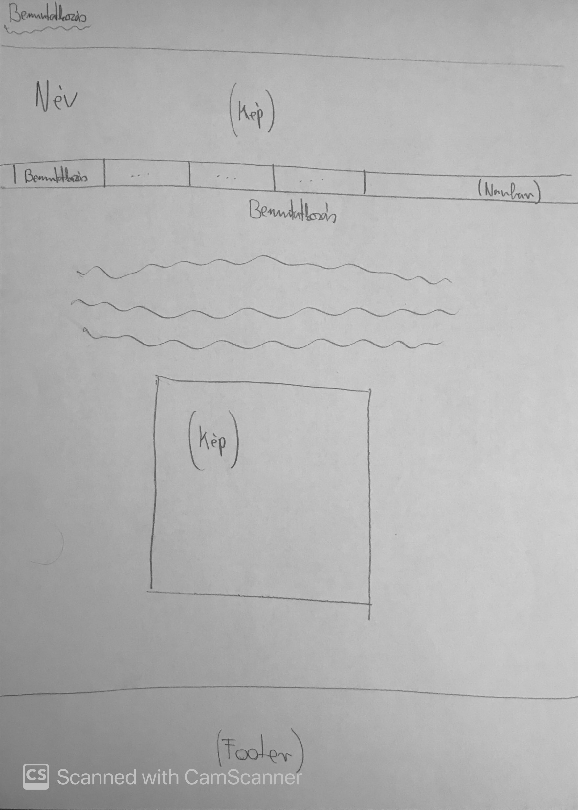
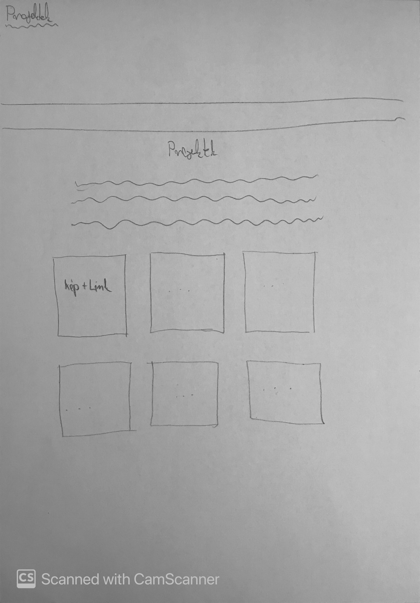
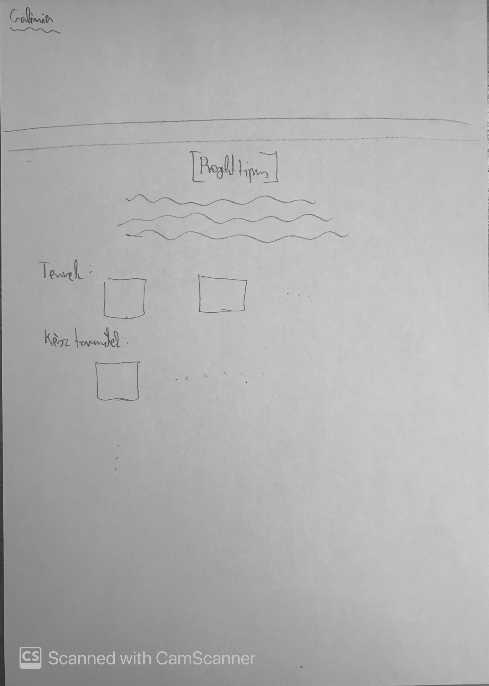
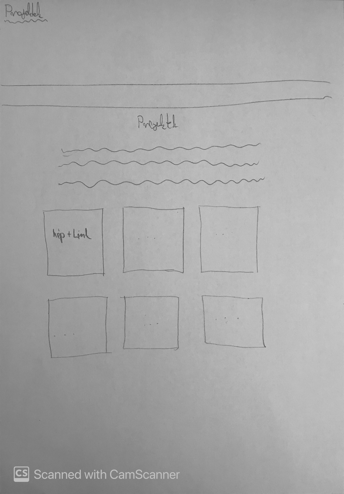
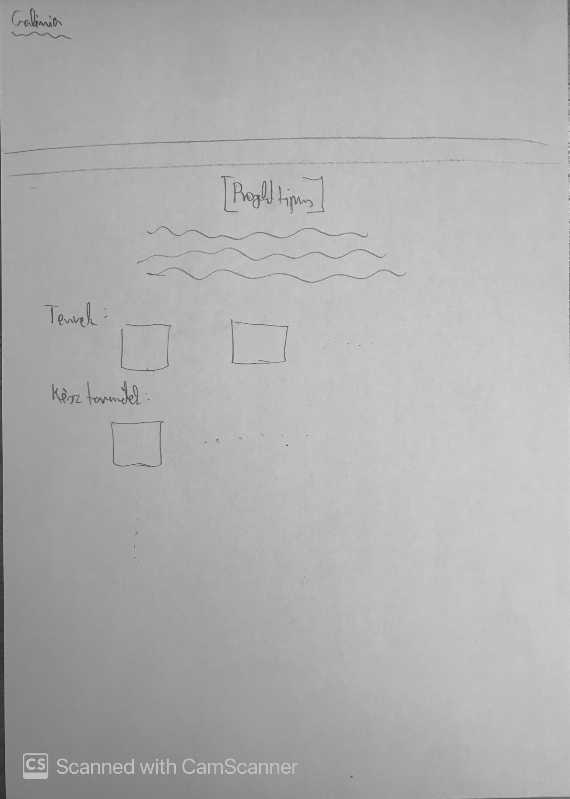

KONCEPCIÓ
Ezen félév előtt még sosem tanultam programozást, viszont nagyon tetszett, hogy több programozási nyelv is bemutatásra került. A HTML/CSS is új volt számomra, így az eleje kissé nehézkesen ment. Sok oktatóvideót megnéztem mielőtt elkezdtem volna ezen honlap szerkesztését. Kialakult egy kép a fejemben, hogy hogyan nézzen ki a honlap, de amint látható, a kész honlap több részen nem egyezik az eredeti tervekkel. Például az első terven a nav-bar nem a képernyő jobb sarkában, hanem a fejléc alatt helyezkedett el viszont ez nem tetszett, úgyhogy a végső megoldásként, egy minimalistább kinézetet készítettem. Emellett egy láblécet is terveztem készíteni, azonban a végső design-on ezt sem tartottam meg. Eleinte a projektek fület úgy terveztem, hogy egy közös galériába teszem az összes képet, de rájöttem hogy igényesebb lenne, ha minden más típusú projektnek külön oldala lenne és szerintem így sokkal áttekinthetőbb lett. Volt több helyen ahol elakadtam, de utánanéztem és minden problémát sikerült orvosolnom. Összességében nagyon élveztem a weboldal készítését, és nagyon jó érzés volt a semmiből egy ilyet létrehozni.
{kind=link}
 



{kind=link}
{kind=link}
Használt weboldalak, programok:
Visual Studio Code
GitHub Desktop
A Teams-be feltöltött és előadásban szereplő mintahonlapok
https://www.youtube.com/watch?v=URx3juKDI5U&list=PLYiFuPu36je2kcaSlieHrYWYXvmZtW2Ws
https://www.w3schools.com/
https://www.youtube.com/watch?v=vQWlgd7hV4A&list=PLqIDNRFH1n9llpyc8gECUsv1fmrDVGVHr&index=1&t=1061s
https://www.youtube.com/watch?v=D-h8L5hgW-w&t=4736s
https://github.com/